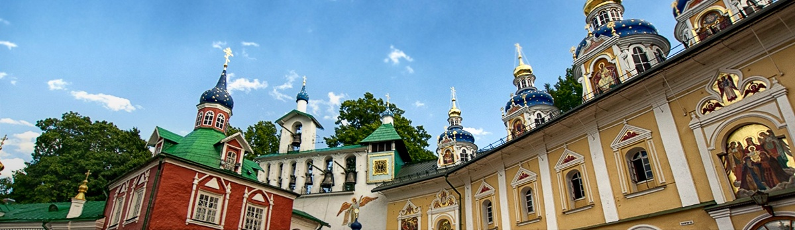
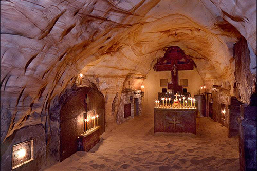
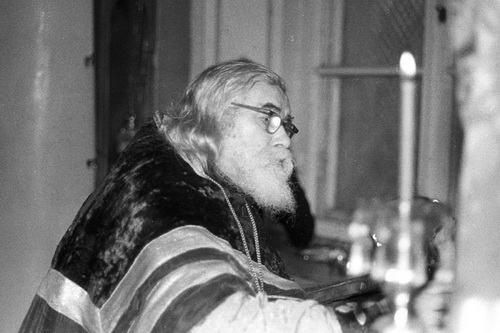
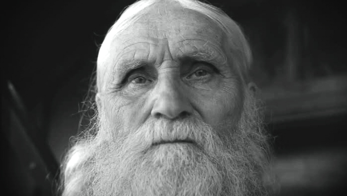

WhatsApp
WhatsApp 

На сайте вы вносите предоплату для бронирования, оставшуюся сумму доплачиваете перед посадкой.

Скидки
За каждую поездку вам начисляется +1% скидки (до 10%).
Не стесняйтесь приводить своих близких и знакомых — если вы заранее забронируете место на 2+ человек, то получите скидку в 10%!
О Добропуте
За последние четыре года, по благословению о. Владимира Головина, сотни людей вместе с нами посетили самые главные места русского православия.
Мы также работаем с церковными приходами и организованными группами.
Отзывы о поездках
Вы можете посмотреть отчеты о последних поездках на наших страницах в социальных сетях:
Опытные духовники
Икона Успения Богородицы
Пещеры с захоронениями святых
Псково-Печерский монастырь был основан в 15 веке и вляется единственным в России, который с тех пор ни разу не был закрыт. «Печеры» означают «пещеры», с которых началась история обители — в одной из их отец Иона устроил церковь в честь Успения Пресвятой Богородицы. В дальнейшем эти пещеры стали использоваться как усыпальница живших в монастыре иноков, среди которых множество святых, таких как валаамские старцы, о. Алиппий (Воронов), о. Иоанн (Крестьянкин).

Пещеры монастыря

о. Иоанн Крестьянкин
На сегодняшний день Псково-Печерский монастырь является одним из крупнейших в России, в котором подвизаются множество иноков, окормляемых опытными духовниками. Паломническая поездка поможет и обычным мирским людям приобщиться к той мудрости, которая сотни лет направляла ко спасению православных христиан.
В поездку входит посещение острова Залит, где подвязался о. Николай Гурьянов.

старец Николай Гурьянов
Ближайшая поездка
∙ 26 мая 2017 пятница ∙
1 день
15:00 отъезд
м. Белорусская
02:00 прибытие в монастырь
27 мая суббота
09:00 исповедь и литургия
13:00 трапеза
13:00 экскурсия
17:00 вечернее богослужение
19:00 трапеза и отдых
2 день
07:00 Божественная литургия
09:00 трапеза
10:00 отъезд на о. Залит
13:00 отъезд в Москву
23:00 возвращение в Москву
м. Белорусская
Цена
4000₽
+2500₽
Проживание, питание и экскурсии
Расписания поездок
К сожалению, по данному маршруту в ближайшее время нет поездок.
Но зато есть другие! Вы можете ознакомиться с ними ниже.
Оптина Пустынь
16-17 сентября
Дивеево
29-01 сен-окт
Толгский монастырь
7-8 октября
Скидки
За каждую поездку вам начисляется +1% скидки (до 10%).
Не стесняйтесь приводить своих близких и знакомых — если вы заранее забронируете место на 2+ человек, то получите скидку в 10%!
О Добропуте
За последние четыре года, по благословению о. Владимира Головина, сотни людей вместе с нами посетили самые главные места русского православия.
Мы также работаем с церковными приходами и организованными группами.
Отзывы о поездках
Вы можете посмотреть отчеты о последних поездках на наших страницах в социальных сетях: